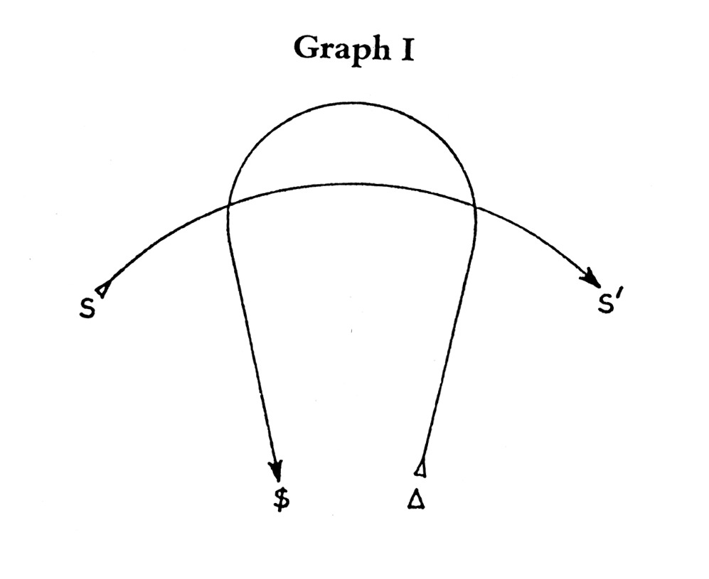

About a girl
Object Petite a (Yes I realize it's misspelled)
Mar 16 2022
Prologue
This is not a love story or a falling out of love story, a breakup story, or any other variation on the genre. This is a bad dream told by an idiot from the perspective of a fool full of delusion and fury signifying nothing but empty desires that were never His to begin with. Like all dreams, it begins in the middle because it is wish-fulfillment, not a warning. Whose wish fulfillment? “Exception your honor leading the reader”. “I’ll allow it”. The story is broken up into sections corresponding to the various stages of the hero’s journey for reasons that will soon be (too) obvious. It should also be noted that no heroes or stories exist within these words. What follows may be obvious, crass, cringe, embarrassing, and most likely bad. Whatever you think it is, it is. This is not high or great, or even good art, it is catharsis, it is fantasy, it is shame… It’s about a girl. Sorry in advance.
Opening Scene/Comfort Zone
It was a two-hour and thirty-minute drive from New York City to the house in Montauk. Throughout his four years in college, he had never once been outside the city except when he traveled back home for the required family holidays the list of which he saw as ‘required’ shrank as the years passed and the excuses and reasons for why he would not be returning home grew longer and his shame outgrew his homesickness. So when one of his fraternity brothers invited Him and some other freshly graduated seniors up to his dad’s vacation home for a week to celebrate and drunkenly reminisce on the ‘good ol’ days” that so recently were just “the good days” or even “the days” He eagerly jumped at the opportunity to delay the inevitable return home. He had no job, no prospects no future, and another week of drugs alcohol, and debauchery seemed like a great way to kill a few more brain cells and hopefully deaden just enough of his consciousness to make all the horrifying questions a recent college graduate with a useless degree receives more bearable. He also thought it would help give him time to come up with a better answer to all these questions since all he could think of as a response was to put a shotgun in his mouth and whisper gently ‘I should have learned to code’ before pulling the trigger. “Why did I have to major in film”? he thought to himself as he imagined the pink mist and brain matter painting the walls of his fantasy. What would his fraternity brothers think if they found him dead? He never liked the use of the term “brother”, in fact, he hated it, he hated fraternities in general but making friends and getting girls were never his strong suit and this was something the “brotherhood” promised to every man willing to chug an unholy amount of Natty Light and put up with a couple of months of homoerotic hazing. He always told himself it was like the army except you fuck drunk chicks who just discovered the Velvet Underground instead of shooting Iraqis or whatever. He also never referred to the fraternity as a frat as so many of his “brothers” did, “you wouldn’t call your country a cunt would you”? as the old saying goes. It’s not that He was ugly or anti-social, but he had always struggled with the cold open, especially with other guys he tried to make friends with. At least for girls you could buy them a drink, tell them they were pretty, play up the nice shy guy angle (it doesn’t always work but some girls love it and for some reason, it was usually the pretty girls with dark straight hair and old cut marks hidden in the most carefully hidden places that you would never know to look for unless you were like him and knew where to look. Girls who were late bloomers and spent their time watching romantic comedies instead of getting finger blasted behind the local convenience store.) but with men, it always felt gay, it felt like he was trying too hard or not trying hard enough. So he joined a fraternity, he learned from an early age that if he wanted friends that meant being in a group, it gives you a shared experience, common ground, and more importantly it made for easy conversation that didn’t come off as subtly trying to signal homosexual intentions or aloof douchebaggery. And sure, there was plenty of douchebaggery in being in a fraternity but at least it wasn’t feigned like everything else… well for Him it was feigned, or at least some of it and he suspected this might have been true for all of his “brothers” although he never asked, mostly out of an irrational fear that it went against some unspoken rule of ethical fraternity code, some ancient law that was written into the ten frat commandments long ago that only the high elders and fraternity chapter heads had access to. So he remained silent and despite his disdain for their strange combination of both wigger and preppy affectations and their almost hyperreal sense of embodying what it is to be in a fraternity as if they studied Van Wilder day and night he didn’t hate his “brothers” and on better days, he even understood the use of the word.
Want Something?
It had been a while since anyone in the car spoke. It was just Him and Gill and the atmosphere was somber and melancholy. Gill would have called it a ‘bad vibe’. How much longer did he have left? He fiddled with his seatbelt as the anxiety of the question rushed through his body. Time was running out and he was squandering the last moments he would ever have with her thinking about memories that would never leave him. He didn’t know why he had to break up with her but he knew he had to and what made it worse was that he knew she didn’t. His fear of the end was only compounded by the fact that he suspected she knew what he was planning. Gill never said anything but he suspected she knew what he was going to do. Maybe not consciously but she knew, she knew in that primal way that all girls do. Maybe it was female intuition, vibes, pheromones, the crystals they all worshiped (even the material atheists), or through access to some distant psychic plane of existence that only women know about; it didn’t matter and he wasn’t sure but maybe in that same way that he thought she knew, he thought that he knew that she knew. He turned to look at her, at the beautiful girl, at the only girl he had ever loved and was now suspecting would ever love and he saw what all men fear when looking at a pretty girl they think that they love. He saw it, he saw that she was about to cry. It wasn’t one of those obvious attention-seeking about to cry looks either. After a year in a relationship with her and three previous years of trying to put his dick in anything that would let him he had learned the different types of female tears and pre tears stages and this wasn’t any of the superficial stages it was a doomsday clock set to midnight code red put your children in the bunker and pray to God because we are all going to fucking die kind of pre tears stage.
He met Gill the first week of college. There wasn’t anything special about their first encounter, no romanticism or fate or some cosmic alignment that brought the two of them together. There wasn’t even a meet-cute or some post-ironic “it was special because they made it special” bullshit. There was no post-sincerity, post everyone seeing every romantic comedy ever made post-hyper-aware-post-post-post-ironic-post-newSincerity type of romanticism or however many more post-someBullshit turtles your mind is capable of stacking specialness about the event. It wasn’t special, but it was nice at least it would be nice for the next hour or however long the rest of the drive would take because after that it would become something else, something different some Eternal Sunshine of the Spotless Mind type nightmarish memory that haunts you forever. One of those memories you wish you could erase but can’t because of reasons He thought were too cliche or too pathetic, reasons that have been given before in better ways by better men written for better more beautiful women, reasons every writer will always seek to articulate throughout eternity. She looked good even when she cried and he wondered if that made him sick or if that made her special, probably both. '“It’s okay,” he said lying to her, “why are you crying”. “it’s nothing,” she said in between sobs. “I just can’t believe you are leaving”. The fear again. What did she mean by leaving? She must know.
Enter Unfamiliar Situation
He had heard about her a few weeks before they even met. His friend was dating a girl on the soccer team who told him during the summer that she might have found someone he would be interested in. The eyes may be the window to the soul but a friend with a girlfriend who loves double-dating is the floodgate through which all pussy flows… or so the old saying goes. His friend’s girlfriend had never met this girl but thanks to the modern wonders of team group chats and cyberstalking she thought she would make a perfect victim. This is how they referred to potential romantic partners which was somehow both tongue in cheek and on the nose all at the same time. She was right about her though, she had all the shallow qualities he looked for in a victim: thin, big eyes, incredibly feminine or a ‘girls girl’, brash, and most importantly of all, she was cuter than she was hot. It’s not that he disliked hot girls or wasn’t attracted to them, by definition if someone is ‘hot’ they are attractive but what he had come to learn going into his fourth year of university was that cute was always preferable to hot. He had tried to articulate the difference before but was never satisfied with the results. He once tried to compile an extensive list for each category such as: Freckles were cute, big tits were hot, sharp features were hot, round cheeks were cute, the girl in your writing workshop who always wears sundresses and whose voices trembles due to nervousness is cute, the bartender who turns her head to smile at you as she walks away to retrieve your cheap liquor is hot, biting the lip while looking you up and down is hot, being able to smile with your eyes is cute, etc… but he was never satisfied with these observations or classifications. He just believed that cute was something that was timeless, interesting, and infinitely dissectable whereas hot was something that relied on novelty and appealed to more base urges but again he was never satisfied with the explanation he just knew there was a difference and that Gill although definitely hot by both his and his ‘brothers’ standards was decisively further into the category of cute.
They had met at the first fraternity party of the year, the classic cliche beginning to every great and tragic love story since the beginning of time. He had decided to wait until the party was almost over to approach her, a useful strategy that had been imparted down to him when he was a sophomore by the fraternity president Big Rob. There’s less pressure to continue awkward first conversations at the end of a party and if by some miracle the two of you actually hit it off it becomes very clear that she is interested as she will have to make an effort to continue the interaction and stick around to talk after the party equivalent of the song closing time begins to play. Of course, you also run the risk of the girl being too drunk to communicate or even stand up by that point which is always dangerous because even if you do the right thing and make sure she gets home okay and hold her hair back as she throws up she won’t remember it and even if her friends witnessed your chivalrous deads and by some miracle were sober enough to remember and explain to the girl what happened she will still have that little voice in her head asking ‘Did that douchey frat guy who brought me home last night rape me’… no good deed goes unpunished. He wondered if it would be easier to clean up vomit from a knight’s armor than it would be those T-shirts with a pocket on it which he was so fond of wearing despite the fact that they had gone out of style a few years ago. Rapunzel Rapunzel let me hold up your hair it would be a shame for it to fall into the chamber pot full of upchucked Smirnoff Ice.
Since he had to wait until the end of the party to ‘make a move’ there was a significant amount of leg work that had to be carried out before he was able to do so. It started by trying to establish several instances of eye contact which he successfully initiated a couple of times during the course of a few hours which was usually a good sign since she seemed to reciprocate the gaze but it could also be because he constantly tried to keep her in his line of sight in order to both observe and be observed. Another explanation for the prolonged eye contact could also be her taking a mental ‘note to self, avoid the creepy dude who keeps staring at me’. All the options seemed equally likely. He didn’t learn much in college but he always liked psychology and he had come to appreciate the power of the mirror exposure effect and its usefulness as a tool even if the time it takes to truly take effect is much longer than the length of any party and although he wasn’t normally an optimist he was a devote believer in the accelerative powers of alcohol. Besides trying to keep her within his view at all times he was also careful to flirt in order to show he was FDA approved by other women of high social rankings which in college meant a sorority girl whose friend or ‘little’ had to both hold her up as she talked and occasionally pull her top up for her. Most of the women he talked to were like that and he didn’t mind, they were fine and almost all very attractive but none of them interested him like Gill. It’s not that she was prettier or that he was only attracted to freshmen if anything his intense interest was the cause of all the elaborate insane fantasies he had created after being told about Gill a few weeks earlier which none of the drunken yet attractive woman at the party Gill included could measure up to. But he didn’t care that it was all in his head, he preferred it that way, let a boy dream. The most difficult part of his autistic scheming which most people failed at when trying to enact was the necessity of maintaining a constant smooth drunk without ever crossing the line into excess. This was especially difficult to maintain since most college friendships are measured in beers consumed together and during the first party of the year all the former pledges from the previous year were eager to prove themselves as equals tonight. Although this made his plans for maintaining a balanced buzz more difficult it did also help him with another part of his plan which was to establish the aesthetic of ‘alone in a crowd of people, I’m a frat bro but different’ kind of vibe. This he achieved by smiling when engaged in a group of his brothers until he came up with an excuse to leave the group and shift his smile into a brooding unhappy disposition. It wasn’t a totally disingenuous performance but he definitely played it up in an attempt to stand out in hopes that she would happen to look over which he noticed her doing several times. He also thought that if it didn’t work out with Gill then maybe some other as of yet unknown potential victim could be impressed by his mating display. “I can change him I can make him happy”. Was it pathetic? Sure. Was it effective? Surprisingly so. When the party was winding down and the majority of Gill’s friends had either gone home, left with someone, or most likely excused themselves due to mild alcohol poisoning he finally decided enough groundwork had been laid, enough booze consumed, and enough inhibitions lowered and that it was finally time to approach.
Meeting with the Goddess
In his memory of the night, she was wearing a tight black dress that exposed a respectably modest amount of cleavage although she would later claim that she was wearing a tube top and jeans and that his memory was not only incorrect but insulting as he couldn’t remember what she the girl he claimed to love was wearing the first night they met. He learned that misremembering small details about girlfriends on significant events was a mortal sin in relationships and one he was often guilty of committing. As the distance between them closed he noticed the soft glow of her phone gave her already soft attractive features a very flattering lighting that made her look angelic but he thought that sounded gay and wished he had a better word to describe her. He no longer remembered if this memory was real or just something he made up to compensate for possibly misremembering other details about the night he just knew he used the word angelic to describe it and it made him feel pathetic. She was lost in that same device as he spoke his first words to her. He wondered what was she doing at that fateful moment. probably busy making sure her ‘roomie’/’besties’ that she just met made it home all right or more likely if they still had male company over and if it was okay for her to return to the room without having to experience her first real-life POV porn scene.
“What level are you on?” He said as he watched her rapidly produce a series of drunken typos into her phone.
“What?” she said confused as she looked up from the glowing screen.
“What level are you on?” He repeated.
“I’m not playing a game.”
He forced a smile. “I know… Sorry, bad joke I guess. The website I found that line off of described it as a foolproof opening line though so I figured I’d give it a shot.”
“What?” She said laughing a little.
“I’m _______ by the way” and he extended his hand toward her.
“Did they also tell you to introduce yourself after or is that something you came up with yourself?”
She smiled and for reasons, he couldn’t fathom as he thought back to the interaction she actually chose to continue the conversation despite the memory making him want to punch himself in the face repeatedly until he could forget he was capable of producing something so skin curdlingly cringe.
“I’m Gill”. She reciprocated the handshake also laughing at the fact that he made such a formal introduction.
“You’re _____’s friend right?”
As he relived the dialogue as if was a PTSD flashback he couldn’t help but feel embarrassed and ashamed at how bad and awkward his introduction was. It made him wonder if it was just openings he was bad at or if all dialogue in real life was this bad but you never notice because you’re too impressed with your own bullshit going on inside your head. She didn’t seem to mind the line though. After all, it probably wasn’t the worst thing she heard that night but sitting in the car almost a year later it still gave him the type of chills that are usually reserved for waking up after a night terror where you sleep with your mom but the mom is a demon who then ties you up and castrates you after uploading the footage of your sexual encounter online to some pornographic incest site. He wasn’t lying when he said he had found the opening on some website dedicated to ‘failproof opening lines’, the only thing he added was the part about admitting to it, he liked to put his own neurotic self-aware style on anything he touched no matter how much worse or more pathetic He made it. He never liked dishonesty and felt that by coming clean and admitting to it all even if it came off as embarrassing or pathetic it was endearing in some puppy trapped in a kennel as a Sarah McLachlan song plays type of way. Plus he always appreciated that scene in Inception where Leonardo DiCaprio tells the guy he’s in a dream to earn his trust and figured if it was good enough for a critically acclaimed blockbuster made by a director criticized for his terrible inhuman dialogue then it was good enough for him. Thinking back on this also reminded him that like most twenty-somethings in his generation, he feared that his entire personality was just an amalgamation of various lines and characters from various forms of media but he would never admit to this at least soberly, mostly because it was a cliche and unoriginal not to mention a cope for something more terrible which his mind would never let him in on. Even though he always assumed he wasn’t alone in this fear this only added to his terror not just because other people were like him, that triggered disgust more than it did fear, what really filled him with dread was the realization that he knew all of this and that his awareness of his affliction made him feel like he had overcome the disease when really it was just another stage in the development of the cancer which was slowly rotting inside him multiplying and replacing what was originally there if there ever was anything to begin with. He was also aware of all of that as well and each successive meta layer that followed being aware and knowing each layer itself was a cope and a symptom with each layer adding another level of cancer he realized would always go untreated and that this knowledge itself was the problem which was another layer and that by even thinking that these layers weren’t just a purposeful infinite regress he used to avoid the real problem and was aware of that and again another set of layers etc... and then he would just let his psychosis win and he gave up on trying to find the real problem, fuck it he thought if my neurosis wants it that bad it can win. He realized this is what a character in a movie who was raised by movies would say and fear and then there was another infinite sea of meta versions of that problem all stacked on top of each other. He got dizzy just thinking about it. He tried to tell Gill about all of this once when he was drunk but he wasn’t sure she understood, sadly she wasn’t culturally posioned or broken enough to understand which he was thankful for, he was glad it wasn’t contagious or if it was maybe she was just immune. She would just smile when he talked to her about this and reassure him as always. She thought it was funny and endearing how crazy he could be and then she’d tell him that she loved him despite his insanity and that he wasn’t like anyone she’d seen on screen and that he was real but what did she know, how could she know? He also knew the love interest was contractually obligated to say everything that she was saying, the script had already been written for her and God hates adlibs more than David Fincher. He thought again about his opening line and was almost angry at her for continuing a conversation with him and for continuing a relationship with him. If only she had better taste in men then he wouldn’t even have to be in this situation. He wanted to ask her about it, he wanted to know what she thought about their first encounter and if she found the awkwardness charming or if she just let it slide because she thought he was attractive. He of course would never ask her this because he didn’t want to make her lie and he knew it would somehow come back to the argument about what she was wearing that night. The fear came back to him after this thought, how much time did he have left?
Adapt To It
They had to pull over because of how hard Gill was crying now. She insisted that it was nothing, she said that she was just emotional that He wasn’t going to be on campus with her next year. She was scared He would cheat on her and asked, “what if you find someone else, what if you stop loving me”. He wished that she knew how wrong she was about him so that she wouldn’t have to cry anymore, so she could stop loving him so she could hate him the way he hated himself. It took thirty minutes for her to run out of fluid. He was utterly useless in these situations. He offered as many banal platitudes as his mind was capable of producing and tried to think back to all the movies he saw with a crying woman and what the most optimal reaction would be to the situation. He pitied her but was ashamed at how proud the tears made him feel, how real it made the relationship feel, he never thought he would be capable of affecting another person so deeply. She even apologized to him for making a scene and possibly making him late. He told her not to worry and he kissed her on the forehead because that’s what he had learned to do. Why the forehead, he wondered. probably because it lacked any sexual implications it’s the places parents kiss you before bed and where you kiss Grandma before pulling the plug. He thought that was an apt analogy.
They eventually started making conversation again when they got back on the road. Her despair had been transformed into mania as she began speaking rapidly asking him if he would want to see a concert with her before the end of summer. She went on about how fun it would be for the two of them to take drugs at a music festival and camp in the car. How she had never fucked on Ecstasy and how amazing she heard it made music sound. They could invite friends, and make it a group activity but later she noted how it might be more special if they went alone. He had never been to a concert, he never saw the point it always seemed too loud too crowded and he hated that it seemed like everyone who went just did it to post a series of videos on social media that no one watched or cared about. He was now more bothered at how cliche a point this was more so than the woman beside him who had just been crying and was clearly exhibiting some form of minor psychosis. At least she was happier. He didn’t understand people, that’s what he liked about her, she didn’t hide and there was nothing under the surface to figure out. It’s not that she didn’t do what all women do which is say one thing and mean another, all women are Straussians at heart. That never bothered him though because everyone knows that, it’s a well-tried trope that’s been covered in all forms of media so he knew to expect it and there were millions of lines of film dialogue and stand-up comedy bits that taught you how to deal with it. Gill was easy, she was honest, she never lied or kept secrets at least that he knew of, she wasn’t complicated for the sake of obscuring and or creating an identity she knew who she was and everyone could see it. He appreciated how unambiguous she was and it comforted him knowing that the only thing he knew about her that others didn’t was that there was nothing else to know. She an elegant well-crafted genre piece that didn’t pretend to be anything other than what it was, no hidden message just quality entertainment. This is what he loved about her. He thought this was a bad reason to love someone. He was probably right. How much longer now? He nodded his head and said he would love for her to pop his concert cherry. Why was he like this? She grabbed his hand which was resting on the console as he turned to look out the window.
“I’m sorry.”
“You don’t have to apologize to me”. He wondered if when it was over if she would forgive him, would he even want her to?
Get What They Want
They began officially dating only a week after they first met. She told him that she was a ‘relationship girl’ which just meant she hated being alone and hadn’t been single for longer than a period of two months ever since she had first developed breasts in middle school. It wasn’t just that Gill didn’t like being alone, he learned early on that she was actively terrified by the idea of it. He used to think that she just had a weird fetish for shower sex until he realized that even in those brief moments in the shower she was terrified and constantly plagued with profound feelings of abandonment. It wasn’t existential ennui or self-hatred it was boredom, a fear of missing out on something he could have said, something he could have done, some moment no matter how banal that they could have shared together. She had general anxiety over wasting some aspect of life that could have been lived together whether good or bad it didn’t matter, all she wanted in life was to give hers to someone else. It wasn’t just the shower, since the relationship began they never once slept apart despite the fact they each slept in a twin-sized bed which caused him to develop severe shoulder pain after nearly a year of sharing a mattress that was made for someone half his size while also having his arm act as a support pillow for her delicate neck. Even when they fought and he made her cry she refused to sleep alone. No matter how awful he was to her she would always lift his arm over her shoulder and place it gently against her breast so that he was almost forced to hold her as she cried and tried to both sleep and forgive him for whatever he did.
The problem wasn’t just with him though, there were things that Gill did that he despised. Despite being incredibly skinny she was born with the platonic ideal of a female ass that she was incredibly proud of and often liked to show off in public. It made Him feel incredibly insecure and shallow that this was the first thing that came to his mind when he thought about the things he didn’t like about her but something inside him despised her every time she showed up to his fraternity household in her favorite pair of short shorts which exposed a sizeable portion of each of her perfect cheeks. He hated how all his brothers would stare at it when she turned around and how they all talked about it and how lucky he was for getting to “hit that shit”. He never told her how much he hated it or asked why she always wore it when she came over. She must have known what she was doing she had to feel their gaze and desire did she want them to want her? Did she do it to make him want her more (all women are born with a perfect understanding of Girard and mimetic desire) or was it for him? Did she want them to want her but know that they couldn’t have it? Was it her version of getting him an expensive watch something impressive to possess to show off to the world? Sometimes he wondered if his hate was just envy. It wasn’t just her ass though there were other parts of her he disliked that were beyond her body and the need to show it off. She wasn’t perfect and he knew that and not in some '‘her flaws are what make her perfect” kind of bullshit way. She was overly sensitive overly attached she was needy, jealous and a self-admitted ‘psycho’ who once spat on Cacey Sterling at a party for “making eyes at him”. She also liked to fight in the reality tv sense of the word. She liked drama, she liked yelling on the train she liked to make a scene, and she liked makeup sex. She liked it when he would get mad and say the most putrid disgusting things imaginable to hurt her. She liked seeing him at his worst and she knew how to bring it out of him quicker and more intensely than anyone else in the world. She enjoyed controlling him. She wasn’t a bad person and despite what she could bring out of him he liked to think he wasn’t either but Gill unlike everyone else meant it when she said “I want to know everything about you” which included the vile shameful parts. She liked the attention he gave her even if it was vitriolic she liked that he exposed these parts of himself even if in the moment it scared her or made her cry. At least she knew what the worst looked like and that after he called her a ‘bitch’ or a ‘hole I use to pass the time before I graduate’. She liked that as she tried to sleep after a fight he would apologize and lie to her while saying things like “I didn’t mean it” he liked that he really did love her and how he made her believe that everything would be okay even if she knew he didn’t believe it and a part of him thought she liked being lied to as if she was a child and he was the adult who knew better even though she knew he was more stunted in his development than maybe anyone else she had ever met. She thought that the lies demonstrated a level of caring, she knew he hated it but appreciated he would sacrifice his own moral code for her happiness. On his worst days, he thought that she liked being used that her only aspiration in life was to give herself over to someone else to control, that she was so confident and secure and bored in herself that all she wanted in life was to give that control over to someone who couldn’t control themselves so that at least they could have power over her. She started to cry again at the next red light. He wondered if women really did have some extra sense to listen in to men’s inner thoughts. He wiped a tear from her freckled cheek and knew this would be the final time he would ever truly know he loved her without the doubt of nostalgia or confusion of time. Remember this he thought as he stared into teary green eyes and puffy freckled cheeks, remember her as she is.
Pay A Heavy Price
These weren’t real tears at least in the way they were before it was just the aftershock from the first seismic event. He watched as she opened up the mirror to check on her hair and makeup as she tried to compose herself and put her face back to where it was before she started weeping. It used to bother him how obsessed she was with her looks which looking back on it was ironic seeing as how obsessed he was with the way women looked and in particular the way she looked but as time passed he grew to enjoy her routine of constant beautification and came to appreciate it as the embodiment of everything he liked about her. He used to think that the people who stared in the mirror the people who cared about the way they dressed and looked were narcissistic when really they were the few who weren’t. He had always avoided the mirror and had always dressed like shit with the exception of attending parties where he knew sweatpants weren’t going to cut it with the girls there. He hadn’t combed his hair since childhood and picked his haircuts so as to minimize the number of times he would have to push his hair down in the morning so as not to look crazed hobo when he got up to class. He had always avoided the mirror and was terrified that the reflection staring back at him was what was real. She saw who she was in the mirror she knew her reflection was not some optical illusion it was the only thing that was real. Gill would never admit that her infatuation with her reflection was some profound act of self-recognition and self-knowledge she probably wouldn’t even understand what he was talking about even if he did have the courage and the courtesy to tell her how impressed he was at her and how ashamed and fearful it made him feel as an impotent observer. He knew she would comfort him that she would smile at the compliment and rub the top of his hand with her thumb and tell him he was wrong and that she just liked looking good for him and how he was okay and just overthinking as always. The car behind them honked, she hadn’t noticed the light had turned green and she quickly scrambled to retract the mirror and continue on forward. He thought he was pretentious and that it was just another thing he did to try and impress himself to add color to his mental landscape, some form of self-assurance he gave to himself to confirm his specialness to affirm that he really was different and smart, that he did deserver her. It was all a cope for some hole inside him that he used her to fill. How cliche, he thought, maybe her next boyfriend would be more original.
He had only cried once in front of her and it was yesterday after the graduation ceremony. He was never an emotional person, he didn’t cry at movies he didn’t cry when his dad died but he cried that day. She was confused and didn’t understand and even though he would give superficial reasons the truth is he didn’t understand either. He just knew that he missed his dad and he hated himself for it. He hated that he wanted to see his disappointed face in the parent’s section he wanted to hear his backhanded congratulations and the bombardment of questions of what he was going to do now with a useless film degree, student debt, and an eighteen-year-old girlfriend who he was certain he would have hated. He didn’t cry for his dad though or for her and he definitely didn’t do it for himself. It was in that moment he knew he would have to break up with Gill. She whispered in his ear and did what all good love interests do in the movies when the protagonist broke down in the arms of a girl he didn’t deserve. She whispered all the platitudes you’re supposed to whisper she kissed all the parts that are supposed to kiss to make you feel better and none of it did anything but make the numbness and apathy more aggravated. He knew it made him look weak and how she would never see him the same he wondered if this is the reason that she was crying now and how much more hallow his words and reassurance must feel to her now after she saw he was just as lost useless and scared as she was. What do you say to a beautiful woman you make cry? No book or movie ever gave an adequate answer so he did what he always did and watched. He watched because that is what he was good at and it was the only thing he had ever learned to do. He was an observer and it was at that moment realized the story was not about him it couldn’t be about him because a protagonist is one who acts and all he could ever do was watch.
Return To Familiar Situation
She parked the car outside his friend’s large vacation house. The car engine hummed in the background as the two sat in the driveway in silence looking at each other in silence.
“Have fun” she said trying to force a smile as she wiped some of the running mascara from her eyes. “I’ll miss you” he said for the first time in a long time knowing that what he said to her wasn’t a lie which didn’t last long as he moved in for a kiss and told her that it would be alright and that he would see her soon. She smiled and he could see in her eyes that she knew he was full of shit. “Make sure to text me.” “I will”. “I’ll call you when I’m going to bed.” “I wouldn’t expect anything less”. The two gave a small half-smile at one another before she laughed a little and once again went to wipe her eyes.
He moved his shit out of the trunk and she rolled the window down and again told him that she loved him as she backed out of the driveway. He took a minute to compose himself before walking into the house afraid of being called a bitch or a pussy if he showed any sort of emotions. His friends knew his plans to break up with her and they had a whole slew of plans on how to get him laid over the weekend which he would purposefully try and sabotage so that he could at least remain faithful until he gave her the final call. He walked into the house and wished things could have been different, wished he didn’t hate himself and that he could find the courage to stay with her, to change for her. His friends greeted him and tossed him a beer. It was comforting that He knew how to act in this movie. They all played their roles well and he knew what he had to do and immediately resumed his role that would soon be outdated but did it anyway so as to avoid critiques calling out his performance “it’s like he was in a different movie” he wished they were right. He sat down on the couch and began to drink trying to forget himself when his phone rang. It was Gill. Suddenly a surge of adrenaline came over him. And then the world went away and he saw a potential for change. He could do it, right now in this moment, the call was a sign, the scene in the film where you run across the pre 9/11 airport to pronounce your love. It was his chance, a message from a higher power to spit in the eye of what he believed to be his destiny. He could do what made him happy instead of sabotaging himself, instead of dooming himself to be an audience member for all eternity, this was it. She said she was outside and after that he heard nothing just pure adrenaline and some primal will that immediately began to pump through his body and replace what was once blood and bone. Without thinking, without speaking or rationalizing He threw the phone on the couch and ran. His friends were confused he didn’t care. He rushed out of the house he knew what he had to do. He had to see her he had to tell her all the things he knew now to be true, he was going to do it he had to do it.
Not Having Changed
“You left this in the car.” She said as she handed him a bottle of supplements that hid his tabs of acid. “Ohh… thanks”. They kissed again and shared another set of awkward platitudes and “I love yous” and then she drove away again forever. He never saw her again and a year later she would post a picture on her social media which he periodically checked up on as a ritualistic form of masochism. She was pregnant now, the father was a man who looked like a Costco version of himself. His stomach hurt and he felt the walls closing in, he was going to be sick, and in his mind, a phrase appeared and echoed through the empty halls of his skull, '“Better death than should you have all of me”. He smiled for the audience and pretended to be happy for her. And then the world outside went black.